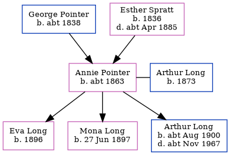

Annie Elizabeth Long (née Pointer) c1863 -
[ Home ] | [ Calendar ] | [ Surnames Index ] | [ Errors ] | [ Family History ]A laundress and the child of George Pointer (a house carpenter) and Esther Spratt, Annie Pointer, the first cousin three-times-removed on the father's side of Nigel Horne, was born in St Peters, Thanet, Kent, England c. 1863 and married Arthur Long (a golf caddy with whom she had 3 children: Eva Gertrude, Mona Winifred Catherine and Arthur Manners Chichester) at Registrar's Office, Minster, Thanet, Kent, England on 24 Aug 18941.
During her life, she was living at Station Road, Birchington, Kent on 3 Apr 18812; at Hughenden Terrace, Birchington, Kent on 5 Apr 18913; at Spinners Cottage, Worth, Kent on 31 Mar 19014; and at Deft Street, Sandwich, Kent on 2 Apr 19115.
Parents
- George was born c. 1838
- Esther was born in 1836
Children
- Eva Gertrude was born in 1896
- Mona Winifred Catherine was born on 27 Jun 1897
- Arthur Manners Chichester was born c. Aug 1900
Citations
- England & Wales Marriages 1837-2005 - Findmypast
- 1881 England, Wales & Scotland Census - Findmypast (was age 7 and the daughter of the head of the household)
- 1891 England, Wales & Scotland Census - Findmypast (was age 17 and the daughter of the head of the household)
- 1901 England, Wales & Scotland Census - Findmypast (was age 27 and the wife of the head of the household)
- 1911 Census for England & Wales - Findmypast (was age 37 and the wife of the head of the household)
Media
Thanet Advertiser - 1 Sep 1894

England & Wales marriages 1837-2008 - BMD/M/1894/3/AZ/000258/099
Family Tree
Map
Generated by ged2site. Last updated on Jul 3, 2024
Known Issues
Birth date (abt 1863) has no citations